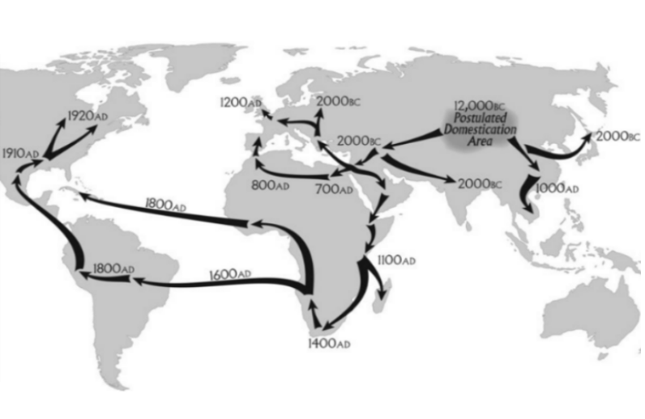

Cannabis
von
Nils und Döner

Geschichte
Inhaltsstoffe
Delta-9-Tetrahydrocannabinol
Cannabidiol
Cannabichromen
Cannabinol
Cannabidivarin
9-Tetrahydrocannabinolsäure
Tetrahydrocannabivarin
Cannabigerol
Wirkung
Erscheinungsformen:


Schema:

Anwendung
| Bestandteile | Verwendung |
|---|---|
| Samen/Öl |
|
| Blüten |
|
| Fasern |
|
| Schäben |
|